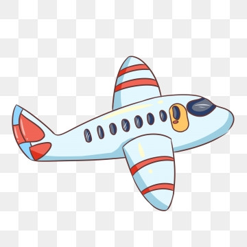

Travel Tips For Istanbul
Use Public Transportation
The easiest way to get around sprawling Istanbul is by using the city's extensive public transportation network. Hop on the tram, subway, funicular or bus system and experience the city from a local's perspective-highly advised.
Get Out of the City
For a break from Istanbul's chaotic traffic and crowds, take a ferry from the Eminonu and ride up the Bosphorus River to the tranquil island of Buyukada. The island prohibits cars, and visitors can rent bikes to explore the hills.
Visit the Docks
Near the Eminonu ferry docks is the Galata Bridge, where you can watch locals fishing off of the bridge, sample street food, or lounge in one of the many bars and restaurants situated below the bridge. Watch out for pickpockets and petty thieves in this area.
(https://traveltips.usatoday.com/travel-tips-istanbul-turkey-1272.html)
